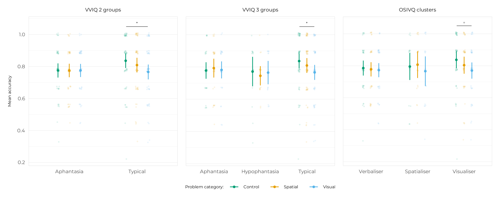

This vignette contains a full breakdown of the analyses of participants’ accuracy on the reasoning problems. The most interesting results are synthetically presented in the main manuscript (preprint here). The present document aims to provide a full account of the steps taken to reach these results, and to provide additional analyses that were not included in the manuscript for brevity.
library(aphantasiaReasoningViie)
#> Welcome to aphantasiaReasoningViie.Data preparation
First, let’s get the clean, analysis-ready data, create cognitive
style clusters using OSIVQ scores (see
vignette("preparing_data") and
vignette("osivq_clusters") for details), and add this
classification to the dataset containing accuracy data.
df_survey <- get_clean_data()$df_survey
# Clustering OSIVQ data
clustering <- cluster_osivq(df_survey)
# Adding named clusters to the survey data
df_survey <- add_named_clusters(
df_survey, clustering,
names = c("Spatialiser", "Visualiser", "Verbaliser"),
levels = c("Visualiser", "Spatialiser", "Verbaliser"),
contrasts = c("_visualiser", "_spatialiser", "_verbaliser"),
base = 1
)
# Merging with experiment data
df_expe <-
dplyr::left_join(
get_clean_data()$df_expe,
df_survey |> dplyr::select(id, cluster),
by = dplyr::join_by("id")
) |>
dplyr::relocate(cluster, .after = "group") |>
dplyr::select(id, group:strategy_group, problem, category, accuracy)
dplyr::glimpse(df_expe)
#> Rows: 2,808
#> Columns: 9
#> $ id <fct> acdn247721443631359lzxb, acdn247721443631359lzxb, acdn2…
#> $ group <fct> Typical, Typical, Typical, Typical, Typical, Typical, T…
#> $ cluster <fct> Visualiser, Visualiser, Visualiser, Visualiser, Visuali…
#> $ group_2 <fct> Typical, Typical, Typical, Typical, Typical, Typical, T…
#> $ group_3 <fct> Typical, Typical, Typical, Typical, Typical, Typical, T…
#> $ strategy_group <fct> No visual strategy, No visual strategy, No visual strat…
#> $ problem <int> 18, 25, 2, 19, 1, 10, 6, 9, 8, 26, 5, 15, 23, 14, 17, 2…
#> $ category <fct> Spatial, Control, Visual, Control, Visual, Spatial, Vis…
#> $ accuracy <int> 1, 1, 0, 0, 1, 1, 1, 1, 1, 1, 1, 1, 1, 1, 1, 1, 1, 1, 1…Method
As described in the manuscript:
We fitted Generalised Linear Mixed Models (GLMMs) with binomial distributions and logit links using the glmmTMB package (McGillycuddy et al., 2025) to predict accuracy with a grouping variable (VVIQ groups, OSIVQ clusters), Category (visual, spatial, or control) along with their two-way interactions as fixed categorical predictors. Varying slopes and intercepts (“random effects”) have been added for each participant by category and for each problem by grouping variable.
Let’s break this down.
The grouping variables
We used several grouping variables to classify participants, all of
which are in the df_expe data frame:
groupis the 4-group VVIQ classification with an “aphantasia” group (VVIQ = 16), “hypophantasia” group (VVIQ [17, 32]), “typical” group (VVIQ [33, 74]), and “hyperphantasia” group (VVIQ [75, 80]). It was not used in the analyses because the hyperphantasia group was too small (N = 4).group_3is the same asgroup, but with the hyperphantasia group merged with the typical group. It is referred to as “VVIQ 3 groups” in the manuscript results.group_2is the binary classification often used in aphantasia literature that additionally merges the hypophantasia group with the aphantasia group. It is refereed to as “VVIQ 2 groups” in the manuscript results.clusteris the cognitive style classification obtained from clustering OSIVQ scores. It contains three groups: “Visualiser”, “Spatialiser”, and “Verbaliser”. It is referred to as “OSIVQ 3 clusters” in the manuscript results.strategy_groupis a classification based on the self-reported strategies used by the participants to solve the problems. It focuses on whether participants used a visual mental imagery strategy and contains two groups: “Visual strategy user” and “No visual strategy”. It is not reported in the manuscript because it was suggested to us after submission by colleagues at a conference.
The same modelling pipeline was therefore applied four times, once for each of the last four grouping variables.
The modelling pipeline
We created a small build_formula() helper function to
write the formula easily, as we used the same model structure a lot of
times:
build_formula("accuracy", "group_2")
#> accuracy ~ group_2 * category + (category | id) + (group_2 |
#> problem)
#> <environment: 0x560cd8f9a920>
build_formula("accuracy", "cluster")
#> accuracy ~ cluster * category + (category | id) + (cluster |
#> problem)
#> <environment: 0x560cd886c410>The models were fitted using the glmmTMB::glmmTMB()
function (and a little set_ranef_prior() helper function to
set a weakly informative prior on the random effects, which helps with
convergence and singularity issues). After model fit, we checked for
potential singularity issues and model performance using the
get_singularity() and get_performance()
functions created for the occasion (which are convenient wrappers around
the performance package).
Finally, we tested our hypotheses with marginal contrasts. As stated in the manuscript:
Due to the way that variance is partitioned in GLMMs (Rights & Sterba, 2019), there does not exist an agreed-upon way to calculate standard effect sizes for individual terms such as main effects or interactions in these models. Thus, in line with general recommendations on how to report effect sizes (e.g., Pek & Flora, 2018), we report and analyse unstandardised effect sizes for post-hoc tests in the form of estimated marginal contrasts (i.e. differences in model-estimated marginal means, hereinafter denoted Δ), in seconds for RTs or as odds ratios for accuracies. To answer our hypotheses, we planned to analyse contrasts between groups, contrasts between categories for each group separately, and interaction contrasts testing the differences in category contrasts between the groups.
This task was performed with the report_contrast()
function, which is a wrapper around several functions from the
emmeans package. We used it to compute accuracy contrasts
between groups, contrasts between categories within each group, and
interaction contrasts (differences in category contrasts between
groups).
Here we go!
Results
VVIQ 2 groups
m_acc_vviq_2 <-
glmmTMB::glmmTMB(
data = df_expe,
formula = build_formula("accuracy", "group_2"),
family = binomial(link = "logit"),
prior = set_ranef_prior(55)
)
# Singularity
m_acc_vviq_2 |> get_singularity()
#> The model is not singular, parameter estimates are trustworthy.
# Performance
m_acc_vviq_2 |> get_performance() |> knitr::kable(align = "c")| AIC | BIC | R2 (cond.) | R2 (marg.) | ICC | RMSE |
|---|---|---|---|---|---|
| 2915.9 | 3005.0 | 0.201 | 0.012 | 0.191 | 0.380 |
# Group contrasts
m_acc_vviq_2 |> report_contrast(~ group_2) |> knitr::kable()
#> NOTE: Results may be misleading due to involvement in interactions| Contrast | Odds ratio | 95% CI | p.value |
|---|---|---|---|
| Aphantasia / Typical | 0.829 | [0.58, 1.18] | 0.301 |
# Category contrasts within groups
m_acc_vviq_2 |> report_contrast(~ category | group_2) |> knitr::kable()| Contrast | group_2 | Odds ratio | 95% CI | p.value |
|---|---|---|---|---|
| Control / Spatial | Aphantasia | 1.061 | [0.45, 2.5] | 0.986 |
| Control / Visual | Aphantasia | 1.081 | [0.46, 2.57] | 0.976 |
| Spatial / Visual | Aphantasia | 1.019 | [0.43, 2.4] | 0.999 |
| Control / Spatial | Typical | 1.335 | [0.72, 2.48] | 0.517 |
| Control / Visual | Typical | 1.906 | [1.04, 3.5] | 0.034 |
| Spatial / Visual | Typical | 1.427 | [0.8, 2.55] | 0.323 |
# Interaction contrasts
m_acc_vviq_2 |> report_contrast(~ category * group_2, interaction = TRUE) |>
knitr::kable()| Category contrast | group_2_pairwise | Odds ratio | 95% CI | p.value |
|---|---|---|---|---|
| Control / Spatial | Aphantasia / Typical | 0.795 | [0.45, 1.41] | 0.430 |
| Control / Visual | Aphantasia / Typical | 0.567 | [0.32, 1.01] | 0.056 |
| Spatial / Visual | Aphantasia / Typical | 0.714 | [0.41, 1.25] | 0.238 |
VVIQ 3 groups
m_acc_vviq_3 <-
glmmTMB::glmmTMB(
data = df_expe,
formula = build_formula("accuracy", "group_3"),
family = binomial(link = "logit"),
prior = set_ranef_prior(20)
)
m_acc_vviq_3 |> get_singularity()
#> The model is not singular, parameter estimates are trustworthy.
m_acc_vviq_3 |> get_performance() |> knitr::kable(align = "c")| AIC | BIC | R2 (cond.) | R2 (marg.) | ICC | RMSE |
|---|---|---|---|---|---|
| 2919.4 | 3044.1 | 0.208 | 0.013 | 0.198 | 0.379 |
m_acc_vviq_3 |> report_contrast(~ group_3) |> knitr::kable()
#> NOTE: Results may be misleading due to involvement in interactions| Contrast | Odds ratio | 95% CI | p.value |
|---|---|---|---|
| Aphantasia / Hypophantasia | 1.263 | [0.68, 2.34] | 0.650 |
| Aphantasia / Typical | 0.919 | [0.55, 1.52] | 0.918 |
| Hypophantasia / Typical | 0.727 | [0.41, 1.28] | 0.384 |
m_acc_vviq_3 |> report_contrast(~ category | group_3) |> knitr::kable()| Contrast | group_3 | Odds ratio | 95% CI | p.value |
|---|---|---|---|---|
| Control / Spatial | Aphantasia | 0.971 | [0.34, 2.75] | 0.998 |
| Control / Visual | Aphantasia | 1.056 | [0.37, 3.02] | 0.992 |
| Spatial / Visual | Aphantasia | 1.088 | [0.38, 3.08] | 0.981 |
| Control / Spatial | Hypophantasia | 1.227 | [0.48, 3.14] | 0.866 |
| Control / Visual | Hypophantasia | 1.107 | [0.42, 2.91] | 0.967 |
| Spatial / Visual | Hypophantasia | 0.902 | [0.35, 2.31] | 0.964 |
| Control / Spatial | Typical | 1.333 | [0.72, 2.45] | 0.513 |
| Control / Visual | Typical | 1.901 | [1.04, 3.46] | 0.032 |
| Spatial / Visual | Typical | 1.426 | [0.8, 2.53] | 0.315 |
m_acc_vviq_3 |> report_contrast(~ category * group_3, interaction = TRUE) |>
knitr::kable()| Category contrast | group_3_pairwise | Odds ratio | 95% CI | p.value |
|---|---|---|---|---|
| Control / Spatial | Aphantasia / Hypophantasia | 0.791 | [0.37, 1.69] | 0.546 |
| Control / Visual | Aphantasia / Hypophantasia | 0.954 | [0.43, 2.11] | 0.908 |
| Spatial / Visual | Aphantasia / Hypophantasia | 1.206 | [0.56, 2.6] | 0.632 |
| Control / Spatial | Aphantasia / Typical | 0.729 | [0.36, 1.48] | 0.380 |
| Control / Visual | Aphantasia / Typical | 0.556 | [0.27, 1.14] | 0.109 |
| Spatial / Visual | Aphantasia / Typical | 0.763 | [0.38, 1.54] | 0.449 |
| Control / Spatial | Hypophantasia / Typical | 0.921 | [0.45, 1.88] | 0.822 |
| Control / Visual | Hypophantasia / Typical | 0.582 | [0.28, 1.22] | 0.152 |
| Spatial / Visual | Hypophantasia / Typical | 0.632 | [0.31, 1.28] | 0.204 |
OSIVQ 3 clusters
m_acc_osivq <-
glmmTMB::glmmTMB(
data = df_expe,
formula = build_formula("accuracy", "cluster"),
family = binomial(link = "logit"),
prior = set_ranef_prior(15)
)
m_acc_osivq |> get_singularity()
#> The model is not singular, parameter estimates are trustworthy.
m_acc_osivq |> get_performance() |> knitr::kable(align = "c")| AIC | BIC | R2 (cond.) | R2 (marg.) | ICC | RMSE |
|---|---|---|---|---|---|
| 2916.7 | 3041.4 | 0.203 | 0.010 | 0.195 | 0.380 |
m_acc_osivq |> report_contrast(~ cluster) |> knitr::kable()
#> NOTE: Results may be misleading due to involvement in interactions| Contrast | Odds ratio | 95% CI | p.value |
|---|---|---|---|
| Visualiser / Spatialiser | 1.023 | [0.57, 1.83] | 0.995 |
| Visualiser / Verbaliser | 1.179 | [0.74, 1.87] | 0.681 |
| Spatialiser / Verbaliser | 1.152 | [0.65, 2.04] | 0.830 |
m_acc_osivq |> report_contrast(~ category | cluster) |> knitr::kable()| Contrast | Cluster | Odds ratio | 95% CI | p.value |
|---|---|---|---|---|
| Control / Spatial | Visualiser | 1.380 | [0.72, 2.66] | 0.484 |
| Control / Visual | Visualiser | 1.853 | [0.97, 3.55] | 0.067 |
| Spatial / Visual | Visualiser | 1.343 | [0.72, 2.5] | 0.505 |
| Control / Spatial | Spatialiser | 0.997 | [0.35, 2.81] | 1.000 |
| Control / Visual | Spatialiser | 1.412 | [0.5, 3.96] | 0.713 |
| Spatial / Visual | Spatialiser | 1.417 | [0.51, 3.93] | 0.703 |
| Control / Spatial | Verbaliser | 1.115 | [0.49, 2.54] | 0.948 |
| Control / Visual | Verbaliser | 1.197 | [0.52, 2.74] | 0.867 |
| Spatial / Visual | Verbaliser | 1.073 | [0.47, 2.44] | 0.978 |
m_acc_osivq |> report_contrast(~ category * cluster, interaction = TRUE) |>
knitr::kable()| Category contrast | Cluster contrast | Odds ratio | 95% CI | p.value |
|---|---|---|---|---|
| Control / Spatial | Visualiser / Spatialiser | 1.384 | [0.64, 2.97] | 0.404 |
| Control / Visual | Visualiser / Spatialiser | 1.312 | [0.61, 2.83] | 0.490 |
| Spatial / Visual | Visualiser / Spatialiser | 0.948 | [0.45, 2] | 0.888 |
| Control / Spatial | Visualiser / Verbaliser | 1.237 | [0.67, 2.28] | 0.497 |
| Control / Visual | Visualiser / Verbaliser | 1.548 | [0.83, 2.89] | 0.171 |
| Spatial / Visual | Visualiser / Verbaliser | 1.251 | [0.69, 2.28] | 0.465 |
| Control / Spatial | Spatialiser / Verbaliser | 0.894 | [0.44, 1.82] | 0.756 |
| Control / Visual | Spatialiser / Verbaliser | 1.180 | [0.57, 2.43] | 0.653 |
| Spatial / Visual | Spatialiser / Verbaliser | 1.320 | [0.65, 2.67] | 0.440 |
Strategy groups
m_acc_strat <-
glmmTMB::glmmTMB(
data = df_expe,
formula = build_formula("accuracy", "strategy_group"),
family = binomial(link = "logit"),
prior = set_ranef_prior(55)
)
m_acc_strat |> get_singularity()
#> The model is not singular, parameter estimates are trustworthy.
m_acc_strat |> get_performance() |> knitr::kable(align = "c")| AIC | BIC | R2 (cond.) | R2 (marg.) | ICC | RMSE |
|---|---|---|---|---|---|
| 2922.1 | 3011.2 | 0.199 | 0.007 | 0.193 | 0.380 |
m_acc_strat |> report_contrast(~ strategy_group) |> knitr::kable()
#> NOTE: Results may be misleading due to involvement in interactions| Contrast | Odds ratio | 95% CI | p.value |
|---|---|---|---|
| Visual Strategy User / No Visual Strategy | 0.931 | [0.66, 1.32] | 0.688 |
m_acc_strat |> report_contrast(~ category | strategy_group) |> knitr::kable()| Contrast | strategy_group | Odds ratio | 95% CI | p.value |
|---|---|---|---|---|
| Control / Spatial | Visual Strategy User | 1.365 | [0.74, 2.52] | 0.457 |
| Control / Visual | Visual Strategy User | 1.574 | [0.85, 2.9] | 0.192 |
| Spatial / Visual | Visual Strategy User | 1.153 | [0.64, 2.07] | 0.837 |
| Control / Spatial | No Visual Strategy | 1.027 | [0.44, 2.39] | 0.997 |
| Control / Visual | No Visual Strategy | 1.362 | [0.59, 3.17] | 0.667 |
| Spatial / Visual | No Visual Strategy | 1.327 | [0.58, 3.06] | 0.707 |
m_acc_strat |> report_contrast(~ category * strategy_group, interaction = TRUE) |>
knitr::kable()| Category contrast | strategy_group_pairwise | Odds ratio | 95% CI | p.value |
|---|---|---|---|---|
| Control / Spatial | Visual Strategy User / No Visual Strategy | 1.330 | [0.77, 2.31] | 0.311 |
| Control / Visual | Visual Strategy User / No Visual Strategy | 1.156 | [0.66, 2.03] | 0.614 |
| Spatial / Visual | Visual Strategy User / No Visual Strategy | 0.869 | [0.51, 1.49] | 0.612 |
Visualisation
The figures showing the distribution of accuracy data displayed in
the manuscript were created with the plot_superb_jitter()
function from the package, which wraps functions from the
ggplot2 and superb packages to create nice
visualisations easily. A little add_significance() helper
function was also created to add significance stars to the plots.
library(patchwork)
library(superb)
pa1 <-
plot_superb_jitter(
df_expe, accuracy, group_2,
title = "VVIQ 2 groups", y_title = "Mean accuracy",
base_size = 12,
plot.background = ggplot2::element_rect(fill = "white", colour = NA),
axis_rel = 1.2
) +
add_significance(
size_star = 4,
tibble::tibble(
x_star = 2,
y_star = 1.07,
stars = "*",
x_line = .data$x_star - 0.16,
x_line_end = .data$x_star + 0.16,
y_line = 1.05
)
)
pa2 <-
plot_superb_jitter(
df_expe, accuracy, group_3,
title = "VVIQ 3 groups", y_title = "Mean accuracy",
base_size = 12,
plot.background = ggplot2::element_rect(fill = "white", colour = NA),
axis_rel = 1.2
) +
add_significance(
size_star = 4,
tibble::tibble(
x_star = 3,
y_star = 1.07,
stars = "*",
x_line = .data$x_star - 0.16,
x_line_end = .data$x_star + 0.16,
y_line = 1.05
)
)
pa3 <-
plot_superb_jitter(
df_expe, accuracy, cluster,
title = "OSIVQ clusters", y_title = "Mean accuracy",
base_size = 12,
plot.background = ggplot2::element_rect(fill = "white", colour = NA),
axis_rel = 1.2
) +
add_significance(
size_star = 4,
tibble::tibble(
x_star = 3,
y_star = 1.065,
stars = "°",
x_line = .data$x_star - 0.16,
x_line_end = .data$x_star + 0.16,
y_line = 1.05
)
)
pa <- pa1 + pa2 + pa3 +
patchwork::plot_layout(axes = "collect", guides = "collect") &
ggplot2::theme(legend.position = "bottom")
plot(pa)
All done!
#> ─ Session info ───────────────────────────────────────────────────────────────
#> setting value
#> version R version 4.5.1 (2025-06-13)
#> os Ubuntu 24.04.3 LTS
#> system x86_64, linux-gnu
#> ui X11
#> language en
#> collate C.UTF-8
#> ctype C.UTF-8
#> tz UTC
#> date 2025-09-16
#> pandoc 3.1.11 @ /opt/hostedtoolcache/pandoc/3.1.11/x64/ (via rmarkdown)
#> quarto 1.8.24 @ /usr/local/bin/quarto
#>
#> ─ Packages ───────────────────────────────────────────────────────────────────
#> ! package * version date (UTC) lib source
#> abind 1.4-8 2024-09-12 [1] RSPM
#> aphantasiaReasoningViie * 0.0.0.9000 2025-09-16 [1] local
#> assertthat 0.2.1 2019-03-21 [1] RSPM
#> P boot 1.3-31 2024-08-28 [?] CRAN (R 4.5.1)
#> bslib 0.9.0 2025-01-30 [1] RSPM
#> cachem 1.1.0 2024-05-16 [1] RSPM
#> P class 7.3-23 2025-01-01 [?] CRAN (R 4.5.1)
#> cli 3.6.5 2025-04-23 [1] RSPM
#> clue 0.3-66 2024-11-13 [1] RSPM
#> P cluster 2.1.8.1 2025-03-12 [?] CRAN (R 4.5.1)
#> clusterCrit 1.3.0 2023-11-23 [1] RSPM
#> clValid 0.7 2021-02-14 [1] RSPM
#> coda 0.19-4.1 2024-01-31 [1] RSPM
#> combinat 0.0-8 2012-10-29 [1] RSPM
#> crayon 1.5.3 2024-06-20 [1] RSPM
#> curl 7.0.0 2025-08-19 [1] RSPM
#> desc 1.4.3 2023-12-10 [1] RSPM
#> P devtools * 2.4.5 2022-10-11 [?] RSPM
#> diceR 3.1.0 2025-06-19 [1] RSPM
#> digest 0.6.37 2024-08-19 [1] RSPM
#> dplyr 1.1.4 2023-11-17 [1] RSPM
#> e1071 1.7-16 2024-09-16 [1] RSPM
#> P ellipsis 0.3.2 2021-04-29 [?] RSPM
#> emmeans 1.11.2-8 2025-08-27 [1] RSPM
#> estimability 1.5.1 2024-05-12 [1] RSPM
#> evaluate 1.0.5 2025-08-27 [1] RSPM
#> farver 2.1.2 2024-05-13 [1] RSPM
#> fastmap 1.2.0 2024-05-15 [1] RSPM
#> forcats 1.0.0 2023-01-29 [1] RSPM
#> P foreign 0.8-90 2025-03-31 [?] CRAN (R 4.5.1)
#> fs 1.6.6 2025-04-12 [1] RSPM
#> generics 0.1.4 2025-05-09 [1] RSPM
#> ggplot2 4.0.0 2025-09-11 [1] RSPM
#> glmmTMB 1.1.12 2025-08-18 [1] RSPM
#> glue 1.8.0 2024-09-30 [1] RSPM
#> gtable 0.3.6 2024-10-25 [1] RSPM
#> haven 2.5.5 2025-05-30 [1] RSPM
#> highr 0.11 2024-05-26 [1] RSPM
#> hms 1.1.3 2023-03-21 [1] RSPM
#> htmltools 0.5.8.1 2024-04-04 [1] RSPM
#> htmlwidgets 1.6.4 2023-12-06 [1] RSPM
#> httpuv 1.6.16 2025-04-16 [1] RSPM
#> insight 1.4.2 2025-09-02 [1] RSPM
#> jquerylib 0.1.4 2021-04-26 [1] RSPM
#> jsonlite 2.0.0 2025-03-27 [1] RSPM
#> klaR 1.7-3 2023-12-13 [1] RSPM
#> knitr 1.50 2025-03-16 [1] RSPM
#> labeling 0.4.3 2023-08-29 [1] RSPM
#> labelled 2.14.1 2025-05-06 [1] RSPM
#> later 1.4.4 2025-08-27 [1] RSPM
#> P lattice 0.22-7 2025-04-02 [?] CRAN (R 4.5.1)
#> lifecycle 1.0.4 2023-11-07 [1] RSPM
#> lme4 1.1-37 2025-03-26 [1] RSPM
#> lsr 0.5.2 2021-12-01 [1] RSPM
#> magrittr 2.0.4 2025-09-12 [1] RSPM
#> P MASS 7.3-65 2025-02-28 [?] CRAN (R 4.5.1)
#> P Matrix 1.7-3 2025-03-11 [?] CRAN (R 4.5.1)
#> mclust 6.1.1 2024-04-29 [1] RSPM
#> memoise 2.0.1 2021-11-26 [1] RSPM
#> P mgcv 1.9-3 2025-04-04 [?] CRAN (R 4.5.1)
#> mime 0.13 2025-03-17 [1] RSPM
#> miniUI 0.1.2 2025-04-17 [1] RSPM
#> minqa 1.2.8 2024-08-17 [1] RSPM
#> mvtnorm 1.3-3 2025-01-10 [1] RSPM
#> P nlme 3.1-168 2025-03-31 [?] CRAN (R 4.5.1)
#> nloptr 2.2.1 2025-03-17 [1] RSPM
#> numDeriv 2016.8-1.1 2019-06-06 [1] RSPM
#> patchwork * 1.3.2 2025-08-25 [1] RSPM
#> performance 0.15.1 2025-08-30 [1] RSPM
#> pillar 1.11.0 2025-07-04 [1] RSPM
#> pkgbuild 1.4.8 2025-05-26 [1] RSPM
#> pkgconfig 2.0.3 2019-09-22 [1] RSPM
#> pkgdown 2.1.3 2025-05-25 [1] any (@2.1.3)
#> pkgload 1.4.0 2024-06-28 [1] RSPM
#> plyr 1.8.9 2023-10-02 [1] RSPM
#> P profvis 0.4.0 2024-09-20 [?] RSPM
#> promises 1.3.3 2025-05-29 [1] RSPM
#> proxy 0.4-27 2022-06-09 [1] RSPM
#> purrr 1.1.0 2025-07-10 [1] RSPM
#> questionr 0.8.1 2025-06-10 [1] RSPM
#> R6 2.6.1 2025-02-15 [1] RSPM
#> ragg 1.5.0 2025-09-02 [1] RSPM
#> rbibutils 2.3 2024-10-04 [1] RSPM
#> RColorBrewer 1.1-3 2022-04-03 [1] RSPM
#> Rcpp 1.1.0 2025-07-02 [1] RSPM
#> Rdpack 2.6.4 2025-04-09 [1] RSPM
#> reformulas 0.4.1 2025-04-30 [1] RSPM
#> P remotes 2.5.0 2024-03-17 [?] RSPM
#> renv 1.1.4 2025-03-20 [1] RSPM (R 4.5.0)
#> reshape2 1.4.4 2020-04-09 [1] RSPM
#> rlang 1.1.6 2025-04-11 [1] RSPM
#> rmarkdown 2.29 2024-11-04 [1] RSPM
#> rrapply 1.2.7 2024-06-26 [1] RSPM
#> rstudioapi 0.17.1 2024-10-22 [1] RSPM
#> S7 0.2.0 2024-11-07 [1] RSPM
#> sandwich 3.1-1 2024-09-15 [1] RSPM
#> sass 0.4.10 2025-04-11 [1] RSPM
#> scales 1.4.0 2025-04-24 [1] RSPM
#> sessioninfo 1.2.3 2025-02-05 [1] RSPM
#> shiny 1.11.1 2025-07-03 [1] RSPM
#> shinyBS 0.61.1 2022-04-17 [1] RSPM
#> showtext 0.9-7 2024-03-02 [1] RSPM
#> showtextdb 3.0 2020-06-04 [1] RSPM
#> stringi 1.8.7 2025-03-27 [1] RSPM
#> stringr 1.5.2 2025-09-08 [1] RSPM
#> superb * 1.0.0 2025-08-18 [1] RSPM
#> sysfonts 0.8.9 2024-03-02 [1] RSPM
#> systemfonts 1.2.3 2025-04-30 [1] RSPM
#> textshaping 1.0.3 2025-09-02 [1] RSPM
#> tibble 3.3.0 2025-06-08 [1] RSPM
#> tidyr 1.3.1 2024-01-24 [1] RSPM
#> tidyselect 1.2.1 2024-03-11 [1] RSPM
#> TMB 1.9.17 2025-03-10 [1] RSPM
#> P urlchecker 1.0.1 2021-11-30 [?] RSPM
#> P usethis * 3.2.1 2025-09-06 [?] RSPM
#> vctrs 0.6.5 2023-12-01 [1] RSPM
#> withr 3.0.2 2024-10-28 [1] RSPM
#> xfun 0.53 2025-08-19 [1] RSPM
#> xtable 1.8-4 2019-04-21 [1] RSPM
#> yaml 2.3.10 2024-07-26 [1] RSPM
#> zoo 1.8-14 2025-04-10 [1] RSPM
#>
#> [1] /home/runner/.cache/R/renv/library/aphantasiaReasoningViie-b75da44b/linux-ubuntu-noble/R-4.5/x86_64-pc-linux-gnu
#> [2] /home/runner/.cache/R/renv/sandbox/linux-ubuntu-noble/R-4.5/x86_64-pc-linux-gnu/179fe56a
#>
#> * ── Packages attached to the search path.
#> P ── Loaded and on-disk path mismatch.
#>
#> ──────────────────────────────────────────────────────────────────────────────